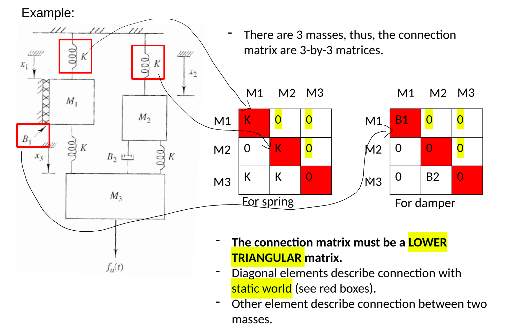
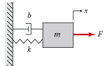
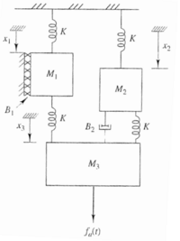
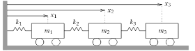
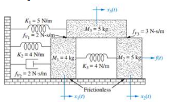
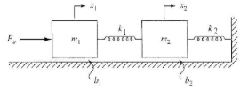
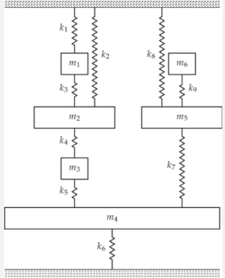

Rectilinear System Modeling#
In this Python notebook, we are going to make a general method for rectilinear system modeling. Our method uses directed graph where vertex represents mass and edge represents spring or damper. From the graph, we can then generate two adjacency matrices: for the springs and for the dampers. These matrices are then used by the Lagrange-Euler method to generate the system equations.

Preparations#
from IPython.display import display, Markdown
from sympy import *
from sympy.physics.vector import dynamicsymbols
from sympy.solvers.ode.systems import linear_ode_to_matrix
from sympy.interactive.printing import init_printing
from mathprint import *
# https://stackoverflow.com/questions/49145059/how-to-change-printed-representation-of-functions-derivative-in-sympy
latexReplaceRules = {
# r'{\left(t \right)}':r' ',
r'\frac{d}{d t}':r'\dot',
r'\frac{d^{2}}{d t^{2}}':r'\ddot',
}
def latexNew(expr,**kwargs):
retStr = latex(expr,**kwargs)
for _,__ in latexReplaceRules.items():
retStr = retStr.replace(_,__)
return retStr
init_printing(use_unicode=False)
init_printing(fontsize='8pt', latex_printer=latexNew)
Lagrange’s equations of a rectilinear system#
def mass_spring_damper(n, M, K, B, F, x):
if n == 1:
x = [x]
# the kinetic energy
T = []
for i in range(n):
T.append(1/2*M[i] * x[i].diff()**2)
# the potential energy
U = []
R = []
for i in range(n):
u = 0
r = 0
for j in range(n):
if i == j:
u = u+1/2*K[i,j]*(x[i])**2
r = r+1/2*B[i,j]*x[i].diff()**2
else:
u = u+1/2*K[i,j]*(x[i]-x[j])**2
r = r+1/2*B[i,j]*(x[i].diff()-x[j].diff())**2
U.append(u)
R.append(r)
# compute the total
U = sum(U) # potential energy
R = sum(R) # dissipation energy
T = sum(T) # kinetic energy
# the lagrange method
eq1 = []
for i in range(n):
eq = diff(T, x[i].diff(), Symbol('t')) - diff(T, x[i]) + diff(R, x[i].diff()) + diff(U, x[i]) - F[i]
eq = solve(eq, x[i].diff().diff())[0]
eq1.append(Eq(x[i].diff().diff(), eq))
return eq1
def present_results(eq, x, t):
n = len(eq)
if n == 1:
x = [x]
# in ODE format (equation of motions):
print("--- System's equation of motion in ODEs ---\n")
for k in range (n):
mprint(latexNew(expand(eq[k])))
# in state space format:
print('\n--- in state space format ---\n')
mprint("\\dot{X}(t) = A X(t) + f")
A, f = linear_ode_to_matrix(eq, x, t, 2)
X = Matrix(x)
XDOT = Matrix([x[i].diff() for i in range(n)])
XDDOT = Matrix([x[i].diff().diff() for i in range(n)])
X_ = Matrix(BlockMatrix([[X],[XDOT]]))
XDOT_ = Matrix(BlockMatrix([[XDOT],[XDDOT]]))
x_ = dynamicsymbols('x')
print('where:\n')
mprint(latexNew(Eq(Symbol('A'), Matrix(BlockMatrix([[zeros(n), Matrix(A[0])],[Matrix(A[2]), Matrix(A[1])]])), evaluate=False)),
latexNew(Eq(Symbol('f'), Matrix(BlockMatrix([[zeros(n,1)],[f]])), evaluate=false)))
mprint(latexNew(Eq(x_.diff(), X_, evaluate=False)),
latexNew(Eq(x_.diff().diff(), XDOT_, evaluate=False)))
Solved problem sets#
Problem 1#

# setup adjacent matrices for K and B:
t, m, b, k, F = symbols('t m b k F')
x = dynamicsymbols('x')
ndof = 1
matK = Matrix([[k, 0, 0]])
matB = Matrix([[b, 0, 0]])
matM = Matrix([m])
matF = Matrix([F])
eq = mass_spring_damper(ndof, matM, matK, matB, matF, x)
present_results(eq, x, t)
--- System's equation of motion in ODEs ---
\[\displaystyle \ddot x{\left(t \right)} = \frac{F}{m} - \frac{b \dot x{\left(t \right)}}{m} - \frac{k x{\left(t \right)}}{m}\]
--- in state space format ---
\[\displaystyle \dot{X}(t) = A X(t) + f\]
where:
\[\begin{split}\displaystyle A = \left[\begin{matrix}0 & 1\\- \frac{k}{m} & - \frac{b}{m}\end{matrix}\right]f = \left[\begin{matrix}0\\\frac{F}{m}\end{matrix}\right]\end{split}\]
\[\begin{split}\displaystyle \dot x{\left(t \right)} = \left[\begin{matrix}x{\left(t \right)}\\\dot x{\left(t \right)}\end{matrix}\right]\ddot x{\left(t \right)} = \left[\begin{matrix}\dot x{\left(t \right)}\\\ddot x{\left(t \right)}\end{matrix}\right]\end{split}\]
Problem 2#

# setup adjacent matrices for K and B:
t, g, M1, M2, M3, K, B1, B2, fa = symbols('t g M_1 M_2 M_3 K B_1 B_2 fa')
x = dynamicsymbols('x1 x2 x3')
ndof = 3
matK = Matrix([[K, 0, 0],[0, K, 0], [K, K,0]])
matB = Matrix([[B1, 0, 0], [0, 0, 0], [0, B2, 0]])
matM = Matrix([M1, M2, M3])
matF = Matrix([M1*g, M2*g, M3*g+fa])
eq = mass_spring_damper(ndof, matM, matK, matB, matF, x)
present_results(eq, x, t)
--- System's equation of motion in ODEs ---
\[\displaystyle \ddot x_{1}{\left(t \right)} = - \frac{B_{1} \dot x_{1}{\left(t \right)}}{M_{1}} - \frac{2.0 K x_{1}{\left(t \right)}}{M_{1}} + \frac{K x_{3}{\left(t \right)}}{M_{1}} + g\]
\[\displaystyle \ddot x_{2}{\left(t \right)} = - \frac{B_{2} \dot x_{2}{\left(t \right)}}{M_{2}} + \frac{B_{2} \dot x_{3}{\left(t \right)}}{M_{2}} - \frac{2.0 K x_{2}{\left(t \right)}}{M_{2}} + \frac{K x_{3}{\left(t \right)}}{M_{2}} + g\]
\[\displaystyle \ddot x_{3}{\left(t \right)} = \frac{B_{2} \dot x_{2}{\left(t \right)}}{M_{3}} - \frac{B_{2} \dot x_{3}{\left(t \right)}}{M_{3}} + \frac{K x_{1}{\left(t \right)}}{M_{3}} + \frac{K x_{2}{\left(t \right)}}{M_{3}} - \frac{2.0 K x_{3}{\left(t \right)}}{M_{3}} + g + \frac{fa}{M_{3}}\]
--- in state space format ---
\[\displaystyle \dot{X}(t) = A X(t) + f\]
where:
\[\begin{split}\displaystyle A = \left[\begin{matrix}0 & 0 & 0 & 1 & 0 & 0\\0 & 0 & 0 & 0 & 1 & 0\\0 & 0 & 0 & 0 & 0 & 1\\- \frac{2.0 K}{M_{1}} & 0 & \frac{K}{M_{1}} & - \frac{B_{1}}{M_{1}} & 0 & 0\\0 & - \frac{2.0 K}{M_{2}} & \frac{K}{M_{2}} & 0 & - \frac{B_{2}}{M_{2}} & \frac{B_{2}}{M_{2}}\\\frac{K}{M_{3}} & \frac{K}{M_{3}} & - \frac{2.0 K}{M_{3}} & 0 & \frac{B_{2}}{M_{3}} & - \frac{B_{2}}{M_{3}}\end{matrix}\right]f = \left[\begin{matrix}0\\0\\0\\g\\g\\\frac{M_{3} g + fa}{M_{3}}\end{matrix}\right]\end{split}\]
\[\begin{split}\displaystyle \dot x{\left(t \right)} = \left[\begin{matrix}x_{1}{\left(t \right)}\\x_{2}{\left(t \right)}\\x_{3}{\left(t \right)}\\\dot x_{1}{\left(t \right)}\\\dot x_{2}{\left(t \right)}\\\dot x_{3}{\left(t \right)}\end{matrix}\right]\ddot x{\left(t \right)} = \left[\begin{matrix}\dot x_{1}{\left(t \right)}\\\dot x_{2}{\left(t \right)}\\\dot x_{3}{\left(t \right)}\\\ddot x_{1}{\left(t \right)}\\\ddot x_{2}{\left(t \right)}\\\ddot x_{3}{\left(t \right)}\end{matrix}\right]\end{split}\]
Problem 3#

# setup adjacent matrices for K and B:
t, m1, m2, m3, k1, k2, k3 = symbols('t m1 m2 m3 k1 k2 k3')
x = dynamicsymbols('x1 x2 x3')
ndof = 3
matK = Matrix([[k1, 0, 0],[k2, 0, 0], [0, k3,0]])
matB = Matrix([[0, 0, 0], [0, 0, 0], [0, 0, 0]])
matM = Matrix([m1, m2, m3])
matF = Matrix([0, 0, 0])
eq = mass_spring_damper(ndof, matM, matK, matB, matF, x)
present_results(eq, x, t)
--- System's equation of motion in ODEs ---
\[\displaystyle \ddot x_{1}{\left(t \right)} = - \frac{k_{1} x_{1}{\left(t \right)}}{m_{1}} - \frac{k_{2} x_{1}{\left(t \right)}}{m_{1}} + \frac{k_{2} x_{2}{\left(t \right)}}{m_{1}}\]
\[\displaystyle \ddot x_{2}{\left(t \right)} = \frac{k_{2} x_{1}{\left(t \right)}}{m_{2}} - \frac{k_{2} x_{2}{\left(t \right)}}{m_{2}} - \frac{k_{3} x_{2}{\left(t \right)}}{m_{2}} + \frac{k_{3} x_{3}{\left(t \right)}}{m_{2}}\]
\[\displaystyle \ddot x_{3}{\left(t \right)} = \frac{k_{3} x_{2}{\left(t \right)}}{m_{3}} - \frac{k_{3} x_{3}{\left(t \right)}}{m_{3}}\]
--- in state space format ---
\[\displaystyle \dot{X}(t) = A X(t) + f\]
where:
\[\begin{split}\displaystyle A = \left[\begin{matrix}0 & 0 & 0 & 1 & 0 & 0\\0 & 0 & 0 & 0 & 1 & 0\\0 & 0 & 0 & 0 & 0 & 1\\- \frac{k_{1}}{m_{1}} - \frac{k_{2}}{m_{1}} & \frac{k_{2}}{m_{1}} & 0 & 0 & 0 & 0\\\frac{k_{2}}{m_{2}} & - \frac{k_{2}}{m_{2}} - \frac{k_{3}}{m_{2}} & \frac{k_{3}}{m_{2}} & 0 & 0 & 0\\0 & \frac{k_{3}}{m_{3}} & - \frac{k_{3}}{m_{3}} & 0 & 0 & 0\end{matrix}\right]f = \left[\begin{matrix}0\\0\\0\\0\\0\\0\end{matrix}\right]\end{split}\]
\[\begin{split}\displaystyle \dot x{\left(t \right)} = \left[\begin{matrix}x_{1}{\left(t \right)}\\x_{2}{\left(t \right)}\\x_{3}{\left(t \right)}\\\dot x_{1}{\left(t \right)}\\\dot x_{2}{\left(t \right)}\\\dot x_{3}{\left(t \right)}\end{matrix}\right]\ddot x{\left(t \right)} = \left[\begin{matrix}\dot x_{1}{\left(t \right)}\\\dot x_{2}{\left(t \right)}\\\dot x_{3}{\left(t \right)}\\\ddot x_{1}{\left(t \right)}\\\ddot x_{2}{\left(t \right)}\\\ddot x_{3}{\left(t \right)}\end{matrix}\right]\end{split}\]
Problem 4#

# setup adjacent matrices for K and B:
t, f = symbols('t f')
x = dynamicsymbols('x1 x2 x3')
ndof = 3
matK = Matrix([[4, 0, 0], [4, 0, 0], [0, 0, 5]])
matB = Matrix([[2, 0, 0], [0, 0, 0], [2, 3, 0]])
matM = Matrix([4, 5, 5])
matF = Matrix([0, f, 0])
eq = mass_spring_damper(ndof, matM, matK, matB, matF, x)
present_results(eq, x, t)
--- System's equation of motion in ODEs ---
\[\displaystyle \ddot x_{1}{\left(t \right)} = - 2.0 x_{1}{\left(t \right)} + x_{2}{\left(t \right)} - \dot x_{1}{\left(t \right)} + 0.5 \dot x_{3}{\left(t \right)}\]
\[\displaystyle \ddot x_{2}{\left(t \right)} = 0.2 f + 0.8 x_{1}{\left(t \right)} - 0.8 x_{2}{\left(t \right)} - 0.6 \dot x_{2}{\left(t \right)} + 0.6 \dot x_{3}{\left(t \right)}\]
\[\displaystyle \ddot x_{3}{\left(t \right)} = - x_{3}{\left(t \right)} + 0.4 \dot x_{1}{\left(t \right)} + 0.6 \dot x_{2}{\left(t \right)} - \dot x_{3}{\left(t \right)}\]
--- in state space format ---
\[\displaystyle \dot{X}(t) = A X(t) + f\]
where:
\[\begin{split}\displaystyle A = \left[\begin{matrix}0 & 0 & 0 & 1 & 0 & 0\\0 & 0 & 0 & 0 & 1 & 0\\0 & 0 & 0 & 0 & 0 & 1\\-2.0 & 1 & 0 & -1 & 0 & 0.5\\0.8 & -0.8 & 0 & 0 & -0.6 & 0.6\\0 & 0 & -1 & 0.4 & 0.6 & -1\end{matrix}\right]f = \left[\begin{matrix}0\\0\\0\\0\\0.2 f\\0\end{matrix}\right]\end{split}\]
\[\begin{split}\displaystyle \dot x{\left(t \right)} = \left[\begin{matrix}x_{1}{\left(t \right)}\\x_{2}{\left(t \right)}\\x_{3}{\left(t \right)}\\\dot x_{1}{\left(t \right)}\\\dot x_{2}{\left(t \right)}\\\dot x_{3}{\left(t \right)}\end{matrix}\right]\ddot x{\left(t \right)} = \left[\begin{matrix}\dot x_{1}{\left(t \right)}\\\dot x_{2}{\left(t \right)}\\\dot x_{3}{\left(t \right)}\\\ddot x_{1}{\left(t \right)}\\\ddot x_{2}{\left(t \right)}\\\ddot x_{3}{\left(t \right)}\end{matrix}\right]\end{split}\]
Problem 5#

# setup adjacent matrices for K and B:
t, Fy, m1, m2, k1, k2, b1, b2 = symbols('t Fy m1 m2 k1 k2 b1 b2')
x = dynamicsymbols('x1 x2')
ndof = 2
matK = Matrix([[0, 0],[k1, k2]])
matB = Matrix([[b1, 0], [0, b2]])
matM = Matrix([m1, m2])
matF = Matrix([Fy, 0])
eq = mass_spring_damper(ndof, matM, matK, matB, matF, x)
present_results(eq, x, t)
--- System's equation of motion in ODEs ---
\[\displaystyle \ddot x_{1}{\left(t \right)} = \frac{Fy}{m_{1}} - \frac{b_{1} \dot x_{1}{\left(t \right)}}{m_{1}} - \frac{k_{1} x_{1}{\left(t \right)}}{m_{1}} + \frac{k_{1} x_{2}{\left(t \right)}}{m_{1}}\]
\[\displaystyle \ddot x_{2}{\left(t \right)} = - \frac{b_{2} \dot x_{2}{\left(t \right)}}{m_{2}} + \frac{k_{1} x_{1}{\left(t \right)}}{m_{2}} - \frac{k_{1} x_{2}{\left(t \right)}}{m_{2}} - \frac{k_{2} x_{2}{\left(t \right)}}{m_{2}}\]
--- in state space format ---
\[\displaystyle \dot{X}(t) = A X(t) + f\]
where:
\[\begin{split}\displaystyle A = \left[\begin{matrix}0 & 0 & 1 & 0\\0 & 0 & 0 & 1\\- \frac{k_{1}}{m_{1}} & \frac{k_{1}}{m_{1}} & - \frac{b_{1}}{m_{1}} & 0\\\frac{k_{1}}{m_{2}} & - \frac{k_{1}}{m_{2}} - \frac{k_{2}}{m_{2}} & 0 & - \frac{b_{2}}{m_{2}}\end{matrix}\right]f = \left[\begin{matrix}0\\0\\\frac{Fy}{m_{1}}\\0\end{matrix}\right]\end{split}\]
\[\begin{split}\displaystyle \dot x{\left(t \right)} = \left[\begin{matrix}x_{1}{\left(t \right)}\\x_{2}{\left(t \right)}\\\dot x_{1}{\left(t \right)}\\\dot x_{2}{\left(t \right)}\end{matrix}\right]\ddot x{\left(t \right)} = \left[\begin{matrix}\dot x_{1}{\left(t \right)}\\\dot x_{2}{\left(t \right)}\\\ddot x_{1}{\left(t \right)}\\\ddot x_{2}{\left(t \right)}\end{matrix}\right]\end{split}\]
Problem 6#

https://link.springer.com/article/10.1007/s11831-021-09583-w
# setup adjacent matrices for K and B:
t, m1, m2, m3, m4, m5, m6, k1, k2, k3, k4, k5, k6, k7, k8, k9 = symbols('t m1 m2 m3 m4 m5 m6 k1 k2 k3 k4 k5 k6 k7 k8 k9')
x = dynamicsymbols('x1 x2 x3 x4 x5 x6')
ndof = 6
matK = Matrix([[k1, 0, 0, 0 , 0, 0],
[k3, k2, 0, 0, 0, 0],
[0, k4, 0, 0, 0, 0],
[0, 0, k5, k6, 0, 0],
[0, 0, 0, k7, k8, 0],
[0, 0, 0, 0, k9, 0]])
matB = zeros(ndof, ndof)
matM = Matrix([m1, m2, m3, m4, m5, m6])
matF = zeros(ndof)
eq = mass_spring_damper(ndof, matM, matK, matB, matF, x)
present_results(eq, x, t)
--- System's equation of motion in ODEs ---
\[\displaystyle \ddot x_{1}{\left(t \right)} = - \frac{k_{1} x_{1}{\left(t \right)}}{m_{1}} - \frac{k_{3} x_{1}{\left(t \right)}}{m_{1}} + \frac{k_{3} x_{2}{\left(t \right)}}{m_{1}}\]
\[\displaystyle \ddot x_{2}{\left(t \right)} = - \frac{k_{2} x_{2}{\left(t \right)}}{m_{2}} + \frac{k_{3} x_{1}{\left(t \right)}}{m_{2}} - \frac{k_{3} x_{2}{\left(t \right)}}{m_{2}} - \frac{k_{4} x_{2}{\left(t \right)}}{m_{2}} + \frac{k_{4} x_{3}{\left(t \right)}}{m_{2}}\]
\[\displaystyle \ddot x_{3}{\left(t \right)} = \frac{k_{4} x_{2}{\left(t \right)}}{m_{3}} - \frac{k_{4} x_{3}{\left(t \right)}}{m_{3}} - \frac{k_{5} x_{3}{\left(t \right)}}{m_{3}} + \frac{k_{5} x_{4}{\left(t \right)}}{m_{3}}\]
\[\displaystyle \ddot x_{4}{\left(t \right)} = \frac{k_{5} x_{3}{\left(t \right)}}{m_{4}} - \frac{k_{5} x_{4}{\left(t \right)}}{m_{4}} - \frac{k_{6} x_{4}{\left(t \right)}}{m_{4}} - \frac{k_{7} x_{4}{\left(t \right)}}{m_{4}} + \frac{k_{7} x_{5}{\left(t \right)}}{m_{4}}\]
\[\displaystyle \ddot x_{5}{\left(t \right)} = \frac{k_{7} x_{4}{\left(t \right)}}{m_{5}} - \frac{k_{7} x_{5}{\left(t \right)}}{m_{5}} - \frac{k_{8} x_{5}{\left(t \right)}}{m_{5}} - \frac{k_{9} x_{5}{\left(t \right)}}{m_{5}} + \frac{k_{9} x_{6}{\left(t \right)}}{m_{5}}\]
\[\displaystyle \ddot x_{6}{\left(t \right)} = \frac{k_{9} x_{5}{\left(t \right)}}{m_{6}} - \frac{k_{9} x_{6}{\left(t \right)}}{m_{6}}\]
--- in state space format ---
\[\displaystyle \dot{X}(t) = A X(t) + f\]
where:
\[\begin{split}\displaystyle A = \left[\begin{array}{cccccccccccc}0 & 0 & 0 & 0 & 0 & 0 & 1 & 0 & 0 & 0 & 0 & 0\\0 & 0 & 0 & 0 & 0 & 0 & 0 & 1 & 0 & 0 & 0 & 0\\0 & 0 & 0 & 0 & 0 & 0 & 0 & 0 & 1 & 0 & 0 & 0\\0 & 0 & 0 & 0 & 0 & 0 & 0 & 0 & 0 & 1 & 0 & 0\\0 & 0 & 0 & 0 & 0 & 0 & 0 & 0 & 0 & 0 & 1 & 0\\0 & 0 & 0 & 0 & 0 & 0 & 0 & 0 & 0 & 0 & 0 & 1\\- \frac{k_{1}}{m_{1}} - \frac{k_{3}}{m_{1}} & \frac{k_{3}}{m_{1}} & 0 & 0 & 0 & 0 & 0 & 0 & 0 & 0 & 0 & 0\\\frac{k_{3}}{m_{2}} & - \frac{k_{2}}{m_{2}} - \frac{k_{3}}{m_{2}} - \frac{k_{4}}{m_{2}} & \frac{k_{4}}{m_{2}} & 0 & 0 & 0 & 0 & 0 & 0 & 0 & 0 & 0\\0 & \frac{k_{4}}{m_{3}} & - \frac{k_{4}}{m_{3}} - \frac{k_{5}}{m_{3}} & \frac{k_{5}}{m_{3}} & 0 & 0 & 0 & 0 & 0 & 0 & 0 & 0\\0 & 0 & \frac{k_{5}}{m_{4}} & - \frac{k_{5}}{m_{4}} - \frac{k_{6}}{m_{4}} - \frac{k_{7}}{m_{4}} & \frac{k_{7}}{m_{4}} & 0 & 0 & 0 & 0 & 0 & 0 & 0\\0 & 0 & 0 & \frac{k_{7}}{m_{5}} & - \frac{k_{7}}{m_{5}} - \frac{k_{8}}{m_{5}} - \frac{k_{9}}{m_{5}} & \frac{k_{9}}{m_{5}} & 0 & 0 & 0 & 0 & 0 & 0\\0 & 0 & 0 & 0 & \frac{k_{9}}{m_{6}} & - \frac{k_{9}}{m_{6}} & 0 & 0 & 0 & 0 & 0 & 0\end{array}\right]f = \left[\begin{matrix}0\\0\\0\\0\\0\\0\\0\\0\\0\\0\\0\\0\end{matrix}\right]\end{split}\]
\[\begin{split}\displaystyle \dot x{\left(t \right)} = \left[\begin{matrix}x_{1}{\left(t \right)}\\x_{2}{\left(t \right)}\\x_{3}{\left(t \right)}\\x_{4}{\left(t \right)}\\x_{5}{\left(t \right)}\\x_{6}{\left(t \right)}\\\dot x_{1}{\left(t \right)}\\\dot x_{2}{\left(t \right)}\\\dot x_{3}{\left(t \right)}\\\dot x_{4}{\left(t \right)}\\\dot x_{5}{\left(t \right)}\\\dot x_{6}{\left(t \right)}\end{matrix}\right]\ddot x{\left(t \right)} = \left[\begin{matrix}\dot x_{1}{\left(t \right)}\\\dot x_{2}{\left(t \right)}\\\dot x_{3}{\left(t \right)}\\\dot x_{4}{\left(t \right)}\\\dot x_{5}{\left(t \right)}\\\dot x_{6}{\left(t \right)}\\\ddot x_{1}{\left(t \right)}\\\ddot x_{2}{\left(t \right)}\\\ddot x_{3}{\left(t \right)}\\\ddot x_{4}{\left(t \right)}\\\ddot x_{5}{\left(t \right)}\\\ddot x_{6}{\left(t \right)}\end{matrix}\right]\end{split}\]